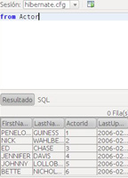

El Hibernate Query Languaje (HQL) es el lenguaje de consultas que usa Hibernate para obtener los objetos desde la base de datos. Su principal particularidad es que las consultas se realizan sobre los objetos java que forman nuestro modelo de negocio, es decir, las entidades que se persisten en Hibernate. Ésto hace que HQL tenga las siguientes características:
-
Los tipos de datos son los de Java.
-
Las consultas son independientes del lenguaje de
SQL específico de la base de datos
-
Las consultas son independientes del modelo de tablas de la base de datos.
-
Es posible tratar con las colecciones de Java.
-
Es posible navegar entre los distintos objetos en la propia consulta.
En Hibernate las consultas HQL se lanzan (o se ejecutan) sobre el modelo de entidades que hemos definido en Hibernate, esto es, sobre nuestras clases de negocio.
Las sentencias que se estudian en este capitulo son del lenguaje HQL de Hibernate, en gran parte son compatibles con JPQL (Java Pesistance Query Language), lenguaje de consulta de persistencia de Java.
De forma poco ortodoxa se podría ver cómo que nuestro modelo de tablas en HQL son las clases Java y NO las tablas de la base de datos. Es decir que cuando hagamos ”SELECT columna FROM nombreTabla” , el ”nombreTabla” será una clase Java y ”columna” será una propiedad Java de dicha clase y nunca una tabla de la base de datos ni una columna de una tabla.

Sentencias consulta (SELECT)
- Clausula from: La consulta más simple que se puede realizar con Hibernate, es utilizando la cláusula
from, la siguientes sería una consulta que mostraría todos los datos de una tabla de nombre Alumnos: from Alumnos
- Cláusula select: La cláusula select escoge qué objetos y propiedades devolver en el conjunto de resultados de la consulta. Un ejemplo de consulta podría ser
select alumno.nombre from Alumnos alumno where alumno.nombre like 'A%'
- La cláusula where: La cláusula
where nos permite refinar la lista de instancias retornadas. Si no existe ningún alias, puede referirse a las propiedades por nombre: from Alumnos where nombre='Francisco'. Si existe un alias, usaremos un nombre de propiedad calificado: from Alumnos as alumnos where alumnos.nombre='Francisco'. Esto retorna instancias de Alumnos llamados "Francisco".
- Funciones de agregación. Las consultas HQL pueden retornar resultados de funciones de agregación sobre propiedades:
select avg(alumnos.nota), sum(alumnos.nota), max(alumnos.nota), count(alumnos) from Alumnos alumnos.
- Expresiones. Las expresiones utilizadas en la cláusula where incluyen lo siguiente: operadores matemáticos, operadores de comparación binarios, operadores lógicos , paréntesis ( ) que indican agrupación, funciones Java, etc.
- La cláusula order by. La lista retornada por una consulta se puede ordenar por cualquier propiedad de una clase retornada o componentes. La palabra
asc o desc opcionales indican ordenamiento ascendente o descendente respectivamente.
- La cláusula group by. Una consulta que retorna valores agregados se puede agrupar por cualquier propiedad de una clase retornada o componentes.
- La cláusula having: restringe grupos.
La sintaxis HQL para las sentencias de consultas es la siguiente:
[select_clause]
from_clause
[where_clause]
[groupby_clause]
[having_clause]
[orderby_clause]
Sobre el siguiente modelo de datos que se expone a continuación se harán todos los ejemplos de HQL
Vemos en la sintaxis que la única clausula obligatoria es from_clause.
No obstante, Hibernate recomienda incluir select_clause , por portabilidad con JPQL (java persistence query languagge).
Veamos ahora un sencillo ejemplo de consulta en HQL
SELECT c FROM Ciclo c ORDER BY nombre
¿Qué diferencias podemos ver entre HQL y SQL?
-
Ciclo hace referencia a la clase Javaejemplo02.Ciclo y NO a la tabla CicloFormativo. Nótese que la clase Java y la tabla tienen distinto nombre .
-
Es necesario definir el alias c de la clase Java Ciclo.
-
Tras la palabra SELECT se usa el alias en vez del ”*”.
-
Al ordenar los objetos se usa la propiedad nombre de la clase Ciclo en vez de la columna nombreCiclo de la tabla CicloFormativo.
Recuerda incluir el alias en la consulta HQL. Si no se hace y se deja la consulta de la siguiente forma:
se producirá la siguiente excepción:
java.lang.NullPointerException
Hibernate soporta
no incluir la parte del
SELECT en la consulta HQL, quedando entonces la consulta de la siguiente forma:
pero en la propia documentación se recomienda no hacerlo ya que de esa forma se mejora la portabilidad en caso de usar el lenguaje de consultas de JPA .
Se ha hecho mención de esta característica ya que en muchos tutoriales que se encuentran por Internet se hace uso de ella.
Mayúsculas
Respecto a la sensibilidad de las mayúsculas y minúsculas , el lenguaje HQL sí que lo es, pero con matices.
-
Las palabras clave del lenguaje NO son sensibles a las mayúsculas o minúsculas.
- Las siguientes 2 consultas son equivalentes.
select count(*) from Ciclo
SELECT COUNT(*) FROM Ciclo
-
El nombre de las clases Java y sus propiedades SI son sensibles a las mayúsculas o minúsculas.
- La siguiente consulta HQL es correcta
SELECT c.nombre FROM Ciclo c WHERE nombre='Desarrollo de aplicaciones Web'
- La siguiente consulta HQL es errónea ya que la propiedad
nombre está escrita con la “N” en mayúsculas.
SELECT c.Nombre FROM Ciclo c WHERE Nombre='Desarrollo de aplicaciones Web'
- La siguiente consulta HQL es errónea ya que el nombre de la clase Java
Ciclo está escrita con la “c” en minúsculas.
SELECT c.nombre FROM ciclo c WHERE nombre='Desarrollo de aplicaciones Web'
-
Al realizar comparaciones con los valores de las propiedades, éstas NO son sensibles a las mayúsculas o minúsculas.
- Las siguientes 2 consultas retornan los mismos objetos
SELECT c.nombre FROM Ciclo c WHERE nombre='Desarrollo de aplicaciones Web'
SELECT c.nombre FROM Ciclo c WHERE nombre='DESARROLLO DE APLICACIONES WEB'
Filtrando
Al igual que en SQL en HQL también podemos filtrar los resultados mediante la cláusula WHERE. La forma de usarla es muy parecida a SQL.
SELECT p FROM Profesor p WHERE nombre='ISABEL' AND ape1<>'ORELLANA'
Al igual que con el nombre de la clase, el nombre de los campos del WHERE siempre hace referencia a las propiedades Java y nunca a los nombres de las columnas. De esa forma seguimos independizando nuestro código Java de la estructura de la base de datos.
Literales
El carácter para indicar un literal de texto es la comilla simple no pudiéndose usar la doble comilla.
SELECT p FROM Profesor p WHERE nombre='juan'
Si se quiere usar la comilla dentro de un literal deberemos duplicarla.
SELECT p FROM Profesor p WHERE ape1='perez l''andreu'
Para incluir un número del tipo integer simplemente se escribe dicho número.
SELECT tb FROM TiposBasicos tb WHERE inte=4
Para incluir un número del tipo long se escribe dicho número y se añade una L mayúscula al final.
SELECT tb FROM TiposBasicos tb WHERE long1=4L
Para representar un double se escribe el número separando la parte decimal con un punto o se puede usar la notación científica.
SELECT tb FROM TiposBasicos tb WHERE double1=1.45
SELECT tb FROM TiposBasicos tb WHERE double1=1.7976931348623157E308
Para representar un float se escribe el número separarando la parte decimal con un punto o se puede usar la notación científica pero se le añade el carácter F en mayúscula al final.
SELECT tb FROM TiposBasicos tb WHERE float1=1.45F
SELECT tb FROM TiposBasicos tb WHERE float1=3.4028235E38F
Para indicar una fecha la incluiremos entre comillas simples con el formato yyyy-mm-dd
SELECT tb FROM TiposBasicos tb WHERE dateDate='2012-07-25'
Para indicar una hora la incluiremos entre comillas simples con el formato hh:mm:ss
SELECT tb FROM TiposBasicos tb WHERE dateTime='02:05:10'
Para indicar una fecha y hora la incluiremos entre comillas simples con el formato yyyy-mm-dd hh:mm:ss.millis,siendo optativos el último punto y los milisegundos .
SELECT tb FROM TiposBasicos tb WHERE dateTime='2012-07-25 02:05:10'
- Operadores de comparación
Para comparar los datos en una expresión se pueden usar las siguientes Operadores:
- Signo igual ”=”: La expresión será verdadera si los dos datos son iguales. En caso de comparar texto, la comparación no es sensible a mayúsculas o minúsculas.
- Signo mayor que ”>”: La expresión será verdadera si el dato de la izquierda es mayor que el de la derecha.
- Signo mayor que ”>=”: La expresión será verdadera si el dato de la izquierda es mayor o igual que el de la derecha.
- Signo mayor que ”<”: La expresión será verdadera si el dato de la izquierda es menor que el de la derecha.
- Signo mayor que ”<=”: La expresión será verdadera si el dato de la izquierda es menor o igual que el de la derecha.
- Signo desigual ”<>”: La expresión será verdadera si el dato de la izquierda es distinto al de la derecha.
- Signo desigual ”!=”: La expresión será verdadera si el dato de la izquierda es distinto al de la derecha.
- Operador ”between”: La expresión será verdadera si el dato de la izquierda está dentro del rango de la derecha.
SELECT tb FROM TiposBasicos tb WHERE inte BETWEEN 1 AND 10
- Operador ”in”: La expresión será verdadera si el dato de la izquierda está dentro de la lista de valores de la derecha.
SELECT tb FROM TiposBasicos tb WHERE inte IN (1,3,5,7)
- Operador ”like”: La expresión será verdadera si el dato de la izquierda coincide con el patrón de la derecha.Se utilizan los mismos signos que en
SQL ”%” y ”_”.
SELECT tb FROM TiposBasicos tb WHERE stri LIKE 'H_la%'
- Operador ”not”: Niega el resultado de una expresión.
- Expresión ”is null”: Comprueba si el dato de la izquierda es null.
SELECT tb FROM TiposBasicos tb WHERE dataDate IS NUL
Se puede hacer uso de los típicos operadores lógicos como en SQL: AND, OR y NOT
SELECT p FROM Profesor p WHERE nombre='ANTONIO' AND (ape1='LARA' OR ape2='RUBIO')
Se puede hacer uso de los típicos operadores aritméticos: suma (+), resta (-), multiplicación (*) y división (/).
SELECT tb FROM TiposBasicos tb WHERE (((inte+1)*4)-10)/2=1
Las funciones de agregación que soporta HQL son:
- AVG(): Calcula el valor medio de todos los datos.
- SUM(): Calcula la suma de todos los datos.
- MIN(): Calcula el valor mínimo de todos los datos.
- MAX(): Calcula el valor máximo de todos los datos.
- COUNT(): Cuanta el número de datos.
SELECT AVG(c.horas),SUM(c.horas),MIN(c.horas),MAX(c.horas),COUNT(*) FROM Ciclo c
- Funciones sobre escalares
Algunas de las funciones que soporta HQL sobre datos escalares son:
- UPPER(s): Transforma un texto a mayúsculas.
- LOWER(s): Transforma un texto a minúsculas.
- CONCAT(s1, s2): Concatena dos textos
- TRIM(s):Elimina los espacio iniciales y finales de un texto.
- SUBSTRING(s, offset, length): Retorna un substring de un texto.El offset empieza a contar desde 1 y no desde 0.
- LENGTH(s): Calcula la longitud de un texto.
- ABS: Calcula el valor absoluto de un número.
- SQRT: Calcula la raíz cuadrada del número
- Operador ”||” : Permite concatenar texto.
SELECT p.nombre || ' ' || p.ape1 || ' ' || p.ape2 FROM Profesor p WHERE Id=1001
Como en SQL también es posible ordenar los resultados usando ORDER BY. Su funcionamiento es como en SQL.
SELECT p FROM Profesor p ORDER BY nombre ASC,ape1 DESC
Las palabras ASC y DESC son opcionales al igual que en SQL.
El uso de funciones escalares y funciones de agrupamiento en la cláusula
ORDER BY sólo es soportado por Hibernate si es soportado por el lenguaje de
SQL de la base de datos sobre la que se está ejecutando.
No se permite el uso de expresiones aritméticas en la cláusula ORDER BY.
Al igual que en SQL se pueden realizar agrupaciones mediante las palabras claves GROUP BY y HAVING
SELECT nombre,count(nombre) FROM Profesor p GROUP BY nombre HAVING count(nombre)>1 ORDER BY count(nombre)
Los nombres de profesores que se repiten mas de una vez
El uso de funciones escalares y funciones de agrupamiento en la cláusula
HAVING sólo es soportado por Hibernate si es soportado por el lenguaje de
SQL de la base de datos sobre la que se está ejecutando.
No se permite el uso de expresiones aritméticas en la cláusula GROUP BY.
HQL también soporta subconsultas como en SQL.
SELECT c.nombre,c.horas FROM Ciclo c WHERE c.horas >
(SELECT AVG(c2.horas) FROM Ciclo c2)
Ciclos que duran más horas que la media de duración de todos los ciclos
En la clausula from podemos incluir múltiples clases, lo que causa un producto cartesiano o una unión "cruzada" (cross join).
from Profesor as profesor, Ciclo as ciclo
Para poder relacionar los profesores con los ciclos que imparten tenemos la opción de especificar la condición de combinación, de forma similar a como se hace en SQL
from Profesores as profesor, Ciclo as ciclo
where profesor = ciclo.profesor
También podemos utilizar la clausula JOIN
from Profesor as profesor INNER JOIN profesor.ciclo as ciclo
La palabra reservada INNER e opcional, también es posible incluir la clausula on condición.
Ejemplo:
from Profesor as profesor INNER JOIN Ciclo as ciclo on
Los tipos de uniones soportadas se tomaron prestados de ANSI SQL
- inner join
- left outer join
- right outer join
- full join.
En ejemplos anteriores incluíamos directamente el valor de los parámetros del WHERE. Eso nos llevaría desde Java a tener un código similar al siguiente:
String nombre="ISIDRO";
String ape1="CORTINA";
String ape2="GARCIA";
Query query = session.createQuery("SELECT p FROM Profesor p where nombre='" + nombre +"' AND ape1='" + ape1 + "' AND ape2='" + ape2 + "' ");
List<Profesor> profesores = query.list();
for (Profesor profesor : profesores) {
System.out.println(profesor.toString());
}
Hibernate soporta parámetros nombrados en sus consultas HQL. Esto facilita la escritura de consultas HQL que aceptan la entrada del usuario. A continuación se muestra la sintaxis simple de usar parámetros nombrados:
String nombre="ISIDRO";
String ape1="CORTINA";
String ape2="GARCIA";
Query query = session.createQuery("SELECT p FROM Profesor p where nombre=:nombre +"' AND ape1=:ape1 + "' AND ape2=:ape2 ");
List<Profesor> profesores = query.setParameter(1,nombre).setParameter(2,ape1).setParameter(3,ape2).list();
for (Profesor profesor : profesores) {
System.out.println(profesor.toString());
}
La asignación de valores a los parámetros se realiza con el método setParameter, los métodos setString, setByte, etc. están obsoletos. También podemos utilizar parámetros con ?.